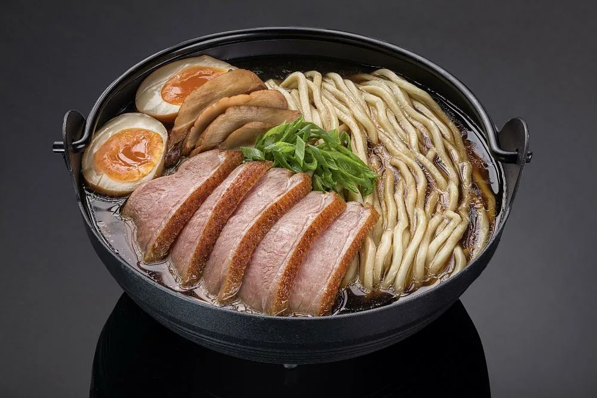
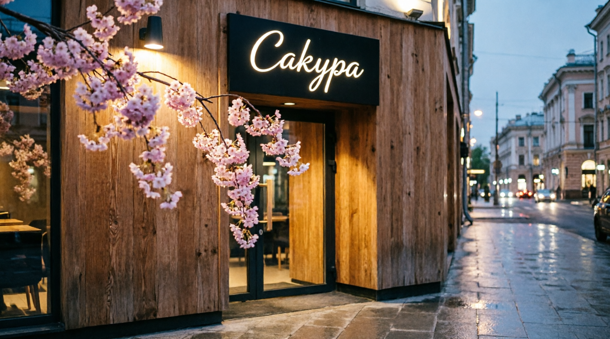
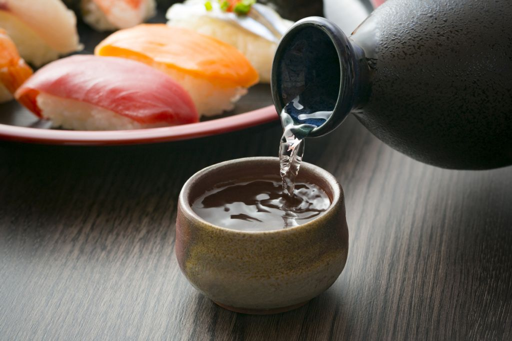

Гастрономический кластер
в центре Москвы
Научим крутить идеальные роллы и готовить настоящий рамен.
15 октября 2026Звуки традиционного сямисена и атмосфера ночного Токио.
24 октября 2026Дегустация редких сортов саке с эксклюзивными закусками от бара.
5 ноября 2026
Добавили согревающие блюда: горячий рамен с уткой и темпуру из сезонных овощей.

Вошли в список лучших японских ресторанов столицы по версии Restoclub!

Привезли редкую партию дзюнмай дайгиндзё. Успей попробовать до конца месяца!
В нашем ресторане мы создаем уютную атмосферу настоящей Японии, чтобы вы могли отдохнуть от городской суеты. Мы готовим по традиционным рецептам и используем только свежие продукты, которые привозим каждую неделю.
Наш шеф-повар прошел стажировку в Токио и привез оттуда секреты приготовления настоящего рамена и суши. Мы верим, что еда — это не просто насыщение, а целое искусство, которое должно радовать все чувства.
Приходите к нам на обед или ужин, и вы почувствуете себя так, будто перенеслись в маленький уютный ресторанчик в Киото. Мы ждем вас!